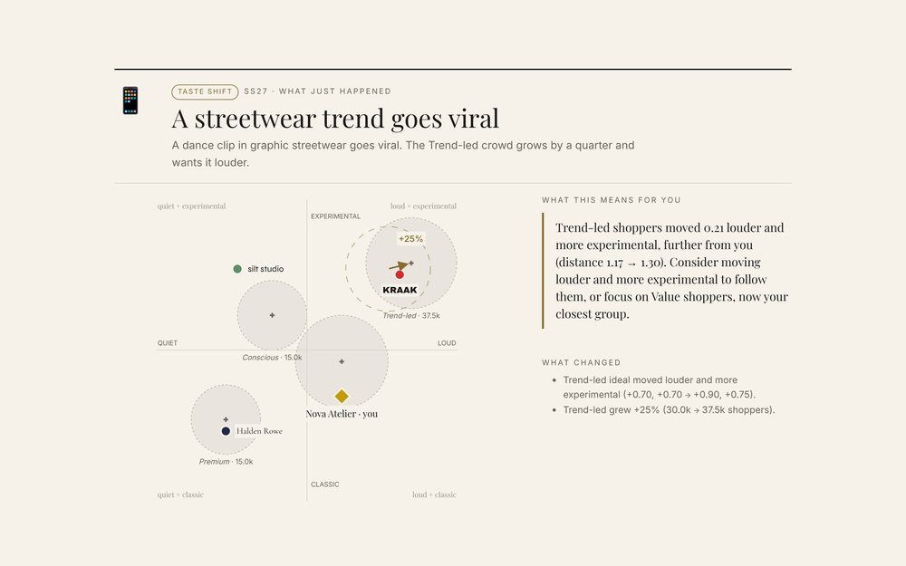

Lesson 02 · Play● LiveSimulated market
The Fashion Market Game: Single Player
Can you outsmart three rival fashion brands? Build your own label, set its identity, and steer it through four seasons of shifting tastes and market shocks.
Play the set scenario to compare results with a class, or random shocks for a new game each time. Every game has a number, so a link replays it exactly.